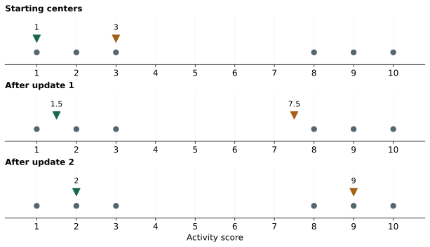
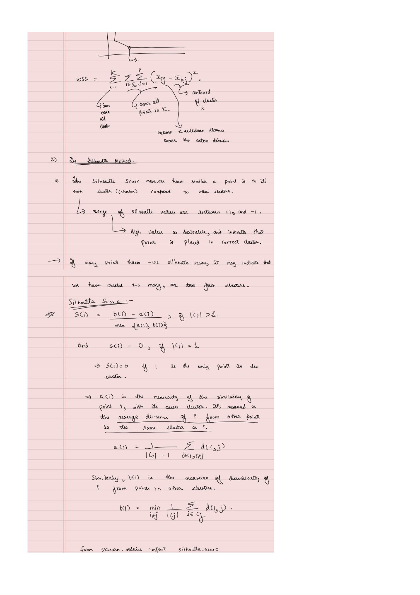

K-means: Build and Check the Clusters
Expanded from Clustering.pdf · View a handwritten page
Clustering groups observations without using target labels. The handwritten notes focus on K-means: choose a few representative centers, assign each point to its closest center, and move the centers to match their assigned points. We will run the whole procedure on six numbers before discussing how to choose the number of groups.
Six points and two starting centers
| Point | A | B | C | D | E | F |
|---|---|---|---|---|---|---|
| $x$ | 1 | 2 | 3 | 8 | 9 | 10 |
Choose $K=2$ groups. Start with centers at 1 and 3. A point's squared distance to a center is $(x-\mu)^2$. In more dimensions, add the squared coordinate differences. K-means minimizes the total squared distance from each point to its assigned center.
$C_k$ is the set of points assigned to group $k$, and $\mu_k$ is its center. This objective is called within-cluster sum of squares, WCSS or WSS, and often inertia.
Alternate assignment and averaging
First assign points to their nearest starting center. The point at 2 is tied; we will consistently assign ties to the first center. That gives group 1 the points 1 and 2, and group 2 the points 3, 8, 9, and 10.
New center 2 = (3 + 8 + 9 + 10) / 4 = 7.5.
Now assign again using centers 1.5 and 7.5. The point at 3 switches to the first group: it is 1.5 away from that center and 4.5 away from the other. Recompute the means and we get 2 and 9.
| Round | Assigned groups | Updated centers | WCSS after update |
|---|---|---|---|
| 1 | {1, 2}; {3, 8, 9, 10} | 1.5; 7.5 | 29.5 |
| 2 | {1, 2, 3}; {8, 9, 10} | 2; 9 | 4 |
| 3 | {1, 2, 3}; {8, 9, 10} | 2; 9 | 4 |
The third round changes nothing, so we stop. The final objective is:
Group 2: (8 − 9)² + (9 − 9)² + (10 − 9)² = 2.
Total WCSS = 4.
The assignment step chooses the lowest squared distance with centers fixed. The update step chooses the best center with memberships fixed: differentiating $\sum_i(x_i-\mu)^2$ gives $\mu=\sum_i x_i/n$. Each step therefore cannot increase the objective. It can still settle at a local solution; different initial centers can produce different outcomes.

Implementations can stop when assignments stabilize, center movement becomes small, or an iteration limit is reached. An empty group needs a defined recovery rule, such as reinitializing its center to a data point. Multiple initializations help find a lower objective.
Why not keep adding groups?
With one group, the center is 5.5 and WCSS is 77.5. With two groups, it is 4. With three, we can reach 2.5, and with six singleton groups it is zero.
| K | 1 | 2 | 3 | 4 | 5 | 6 |
|---|---|---|---|---|---|---|
| WCSS | 77.5 | 4 | 2.5 | 1 | 0.5 | 0 |
WCSS by itself rewards more groups. The elbow method looks for a point where extra groups bring much smaller improvements. Here the large drop from one to two groups makes two a natural candidate. Real data may have no clear elbow, and independently fitted runs can miss the best solution at some K values.
Check whether a point fits its group
Silhouette compares two average distances for each point. Let $a(i)$ be its mean distance to the other points in its own group. Let $b(i)$ be the smallest mean distance to any other group. The second quantity averages over a whole candidate group; it is not just distance to a center or to the nearest outside point.
For the point at 2 in our final grouping:
$b=(|2-8|+|2-9|+|2-10|)/3=7$.
Silhouette = (7 − 1) / 7 = 6/7 ≈ 0.8571.
Here we use ordinary Euclidean distances, not the squared distances in WCSS. The score lies between −1 and 1. A value near 1 means a point is much closer to its own group; near 0 means the two distances are similar; a negative score means another group is closer on average.
Our six points have an average silhouette of about 0.8065. A singleton is conventionally assigned score 0. The overall silhouette requires at least two groups and fewer groups than observations. It is useful evidence for a grouping, but its preference for well-separated compact groups may not match every application.
Compare separation with cluster diameter
The notes also introduce the Dunn index. We must specify its distance convention. Use the smallest distance between points in different groups as separation, and the largest within-group point-to-point distance as diameter:
Largest within-group diameter: 3 − 1 = 10 − 8 = 2.
Dunn index = 5 / 2 = 2.5.
Larger values indicate more separation relative to spread under this definition. Because it uses extreme distances, one unusual point can strongly affect it. Other Dunn variants use different separation or diameter definitions, so compare like with like.
Use K-means++ to spread out the starting centers
K-means++ first chooses a data point at random. For each remaining point, calculate $D(x)$, its distance to the closest already chosen center. Sample the next center with probability proportional to $D(x)^2$.
If the first center is 1, the squared distances are:
| Point | 1 | 2 | 3 | 8 | 9 | 10 |
|---|---|---|---|---|---|---|
| $D^2$ | 0 | 1 | 4 | 49 | 64 | 81 |
The point at 10 has probability $81/199\approx0.4070$ of being selected next. It is the most likely choice, but is not guaranteed. This makes precise the “farther points are more likely” intuition in the handwritten page: the rule samples by squared distance rather than always selecting the farthest point. Repeat until K centers are selected, then run the usual assignment/update steps.
Assumptions behind Euclidean distance
Before trusting the clusters, check what “close” means. For two observations $x$ and $y$ described by the same $p$ numeric features, Euclidean distance is:
Here $x_j-y_j$ is the difference in feature $j$. Square each difference, add them, then take the square root. K-means minimizes the squared version; both versions select the same nearest center.
The formula has no distributional assumptions. To make it a useful measure of similarity, the feature representation should satisfy these conditions:
- Differences have meaning. Each coordinate measures the same feature for every observation. Arbitrary category codes do not qualify: category 3 is not necessarily closer to category 2 than to category 1.
- Scales reflect the intended importance. After any scaling, a one-unit difference contributes equally in every coordinate. Large numerical ranges can therefore dominate.
- Repeated information gets an intentional weight. The formula adds coordinate contributions without adjusting for correlations. Duplicating a feature counts its squared difference twice. Independence is not required, but correlated features can give shared information extra weight.
- Straight-line separation matches similarity. A raw angle, for instance, makes 359° and 1° look far apart even though they are close around a circle.
Neither normal distributions nor unit feature variances are required. The Euclidean formula simply measures distance in the coordinates you give it.
Put features on meaningful scales
Suppose two features are annual income and age. A difference of 10,000 income units contributes 100,000,000 to squared Euclidean distance; a difference of 10 years contributes 100. The raw units make the income coordinate dominate.
Standardization subtracts a feature's training mean and divides by its training standard deviation. It measures differences in standard-deviation units. This can help when equal relative variation is a sensible starting point. A feature with zero variance needs separate handling.
A change in mean alone is different: adding 1,000 to every value in one coordinate leaves all pairwise distances unchanged. Also, equal feature variances do not imply equal contributions to every pair's distance. They describe average spread, while individual pairs can differ in very different directions.
Assumptions behind K-means
K-means represents each group by one mean and assigns each observation to one group. Its main requirements and practical assumptions follow from that choice:
- Numeric means are meaningful. Averaging the chosen features should produce a useful center. Missing values need to be handled before ordinary K-means can calculate distances and means.
- You choose $K$ before fitting. The algorithm finds a partition into that many groups; it does not establish that the data naturally contain that many groups.
- One center can represent each group. Compact, roughly round groups in the chosen feature space suit the objective. Long, curved, or interlocking groups may need several centers to describe one natural cluster.
- Differences in spread and population are manageable. A broad or heavily populated group can dominate WCSS, so K-means may split it while merging a smaller nearby group. Similar spreads and sizes are favorable conditions, not strict requirements.
These are assumptions about the usefulness of the grouping, not a requirement for Gaussian data or independent features. The scikit-learn examples show how shape, spread, and group size can change the result.
Advantages and disadvantages of K-means
| Advantages | Disadvantages |
|---|---|
| Simple to understand: alternate nearest-center assignments and mean updates. | Initialization matters: different starts can reach different local solutions. Restarts help but do not guarantee the global best. |
| Often fast: practical for many observations when $K$ and the number of features are moderate. | Cost grows: more centers, features, iterations, and restarts require more work. |
| Compact summaries: each center describes the average features of its group. | Sensitive to scale and outliers: large coordinate differences are squared, and extreme observations can pull a mean away from most points. |
| Useful for compact groups: nearby points can be represented well by one center. | Limited cluster shapes: curved groups and groups with very different spreads or populations can be split or merged poorly. |
| Direct control over group count: choose $K$ to obtain the desired number of groups. | $K$ must be selected: K-means will partition data even when no clear natural clusters exist. |
| Easy assignment of new points: choose the nearest learned center. | Every point gets one group: ordinary K-means provides neither an “unassigned noise” category nor probabilities of membership. |
Use a distance representation that matches the problem, examine the resulting groups, and check whether they remain similar across runs. When many features overlap, a lower-dimensional representation can make distances easier to inspect. That leads to the PCA guide.
From the handwritten notes
This guide expands Clustering.pdf with worked tables and intermediate steps. The PDF contains all the original pages.
View original page 2


Further reading: